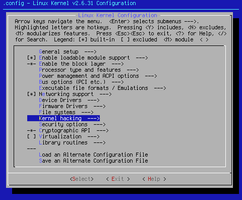
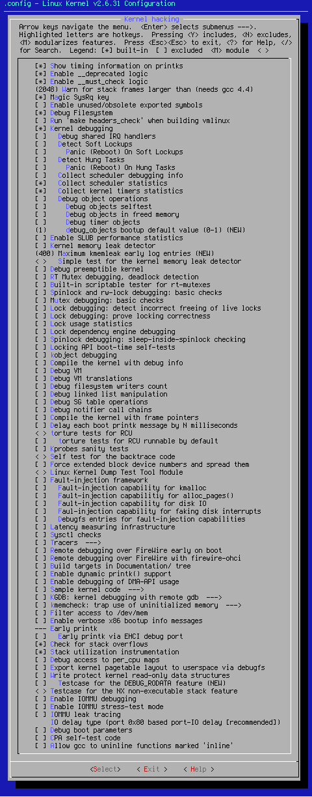

Custom Search
This page covers Kernel Hacking.

Arrow key down to the area shown. When you hit <Select> at this point, you will bring up the following sub page:

Most of the settings here are only relevant for or to kernel hackers. Rule-of-thumb: If you're not a kernel hacker, most of these settings should be off.
The suggested settings here are meant for regular users who are not hacking the kernel. Generally speaking, other than the ones suggested here, you should be turning on only those additional kernel settings a kernel dev requests as an aid to resolving a problem. Once your problem is resolved, you should then reset those requested options to off.
These settings can be grouped in a few logical areas. They are:
Compiler directives -- instructions to the compiler for special treatment.
Debugging directives -- instructions to turn on specific debugging areas.
Debugging info -- create information required for debugging tools.
Performance checkpoints -- additional points in the kernel for performance tools to use.
Runtime directives -- kernel self checking instructions while running.
These settings will be updated along with the rest of the kernel seed settings once the entire site is completed.
[*] Show timing information on printks
This is my primary means of doing kernel troubleshooting. Turning this setting on makes the kernel declare what drivers or options became active at what time. Using this is a way of finding modules or other code that slows down boot time significantly. It also keeps track of other issues, such as non-fatal segmentation faults.
It writes all the information to the /var/log/dmesg file for later perusal. This is why I ask that people send back their /var/log/dmesg file. If all the drivers load properly, and issues remain, I know whether or not the kernel remains an issue. Usually, this is not the case. Because this is my primary troubleshooting setting, this setting defaults to on.
[*] Enable __deprecated logic
This setting suppresses deprecated logic warnings. While settings that are deprecated are listed as such, sometimes folks don't take the time to read all the help. It's a redundancy, but one that serves to remind if you go through your setup too quickly. This setting defaults to on. It may change in future iterations.
[*] Enable __must_check logic
This setting allows the kernel to let you know when you're working with a deprecated setting or group of settings. This is a good thing to know, and since it doesn't continue running and eating resources, this setting defaults to on.
(2048) Warn for stack frames larger than (needs gcc 4.4)
This setting defaults to 2048 and tells gcc to warn during buid time of stack frames larger than the number in parenthesis. Since it requires gcc-4.4 or better this setting is moot. Unless you know what to do with stack frames larger than 2K AND you also have at least to gcc-4.4, set this setting to '0'. This will ensure the check for stack frames larger than 2K will never be performed. This default will be changing with the new iteration.
[*] Magic SysRq key
Turning this setting on allows you to have some minimum control left if your computer can still get to the kernel to work the magic in the button. This is a last ditch setting. If you can't get your computer to reboot semi-gracefully with this tool, the only option left is reset or power down and back up.
When working with this setting, remember the acronym, Raising Skinny Elephants Is Utterly Boring:
Alt+SysRq+r= put keyboard in Raw mode
Alt+SysRq+s= Sync the disk
Alt+SysRq+e= tErminate all processes
Alt+SysRq+i= kIll all processes
Alt+SysRq+u= remoUnt all filesystems read only
Alt+SysRq+b= reBoot the system
[ ] Enable unused/obsolete exported symbols
This setting allows you to add old symbols to your kernel. In general, this is unnecessary as by the time symbols make it to unused/obsolete status, the API that required them is no more. Because this adds unneeded cruft to the finished kernel, this setting defaults to off. If you run any of the VMWare products, turn this setting on. Some earlier versions of 'nvidia-drivers' and 'ati-drivers' may require this setting to be on. In these cases, you'll usually get some kind of 'symbols missing' message.
[*] Debug Filesystem
This setting allows you to read and write to files contained in debugfs. Debugfs is a virtual file system that kernel devs use to put debugging files into. Since this allows some debug info into userspace, this setting defaults to on.
[ ] Run 'make headers_check' when building vmlinux
This setting extracts the user-visible kernel headers whenever the kernel is compiled. As a general rule, this really isn't a good idea. Since Gentoo users have Linux-headers ebuilds, and since rebuilding of glibc is a good idea after installing the Linux-headers, this setting defaults to off.
[*] Kernel debugging
This is a basic setting to allow for kernel debugging. This option is turned on as a courtesy to kernel devs. If you are going to work with kernel devs, especially doing troubleshooting and debugging, this needs to be on.
[ ] Debug shared IRQ handlers
This is used to debug driver IRQ issues. Turn on if you are doing driver development. Since this isn't needed by most users, it defaults to off.
[ ] Detect Soft Lockups
A soft lockup is one in which the kernel begins to loop in kernel mode for sixty seconds or more without giving other tasks a chance to run. With this setting on, the kernel will print a stack trace, but remains stuck in the loop. If you have issues of this type, turn this setting on. This setting defaults to off.
[ ] Panic (Reboot) On Soft Lockups
This setting allows the kernel to panic when it detects a soft lockup. The panic and the panic timer can be used as a means to force an automatic reboot. Because this is not needed to get your system running, this setting defaults to off. Turn on if you have a high availability system that must have soft lockups fixed as quickly as possible.
[ ] Detect Hung Tasks
A Linux task can be in many states; running, sleeping, etc. A hung task is one that stays in an uninterruptible "D" state indefinitely. "D" state is a sleep state from which the process in question can't be awakened. If you have issues of this type, turn this setting on. This setting defaults to off.
[ ] Panic (Reboot) On Hung Tasks
As with [ ] Panic (Reboot) On Soft Lockups above, this setting and the panic timer can be used to reboot a system with a process stuck in an uninterruptible "D" state. Also as above, turn this setting on if you have a high availability system that must have hung tasks fixed as quickly as possible.
[ ] Collect scheduler debugging info
This setting is used to collect debugging information directly related to the scheduler. This setting defaults to off. Turn on if you have scheduler issues, or are working with the scheduler.
[*] Collect scheduler statistics
This setting injects extra code into the scheduler to allow it to collect statistics about the behavior of the scheduler. This setting defaults to on, but will be changing in the next seed settings iteration.
[*] Collect kernel timers statistics
This setting allows additional code to be inserted into the timer routines to collect statistics about the kernel timers being reprogrammed. This setting defaults to on, but is likely to change in the next seed settings iteration.
[ ] Debug object operations
This setting inserts extra code into the kernel to track the life time of various objects and validate the operations on the same. Turn on if needed. This setting defaults to off.
[ ] Debug objects selftest
This setting enables the selftest of the object debug code. If you have need of this functionality, turn this setting on. This setting defaults to off.
[ ] Debug objects in freed memory
This setting enables checks whether a k/v free operation frees an area which contains an object which has not been deactivated properly. Because this code causes serious system slowdowns, this setting defaults to off.
[ ] Debug timer objects
This setting inserts additional code into the timer routines to track the life time of timer objects and validate the timer operations. This setting defaults to off.
(1) debug_objects bootup default value (0-1) (NEW)
Debug objects boot parameter default value. Cryptic, isn't it? This setting defaults to off.
[ ] Enable SLUB performance statistics
This setting turns on runtime debugging for the SLUB memory allocator. This isn't recommended as it causes serious slowdowns. Turn on only if you have memory allocation issues.
[ ] Kernel memory leak detector
This setting is used to detect memory leaks. If you have memory leak issues, turn this setting on. It is most effective when combined with SLAB and/or SLUB debugging turned on. This setting defaults to off.
(400) Maximum kmemleak early log entries (NEW)
This setting sets the size of the early log. The early log is used to help eliminate memory leak false positives. If kmemleak reports, "early log buffer exceeded," increase the size of this value. The listed number is the kernel default for the early log size.
< > Simple test for the kernel memory leak detector
This setting creates a module that forces memory leaks. This setting defaults to off.
[ ] Debug preemptible kernel
This setting is used to debug kernel preemption. Turn on if you have a preemptible kernel and are having issues with preemption. This setting defaults to off.
[ ] RT Mutex debugging, deadlock detection
This code allows rt mutex semantics violations and rt mutex related locups to be detected and reported automatically. This setting defaults to off.
Mutex is a contraction of "mutual exclusion". Mutual exclusion is used to keep pieces of code from using a common resource. A mutex is also a common name for a program object that negotiates mutual exclusion among threads, also called a lock.
[ ] Built-in scriptable tester for rt-mutexes
This setting turns on a mutex tester. This setting defaults to off.
--- Spinlock and rw-lock debugging: basic checks
A spinlock is a situation where an execution thread is held in a loop waiting, or spinning, hence the name. This setting allows for the capture of spinlock errors, and with the NMI watchdog, allows for the debugging of the captured errors.
--- Mutex debugging: basic checks
This feature allows mutex semantics violations to be detected and reported.
--- Lock debugging: detect incorrect freeing of live locks
According to < Help >,"This feature will check whether any held lock (spinlock, rwlock, mutex or rwsem) is incorrectly freed by the kernel, via any of the memory-freeing routines (kfree(), kmem_cache_free(), free_pages(), vfree(), etc.), whether a live lock is incorrectly reinitialized via spin_lock_init()/mutex_init()/etc., or whether there is any lock held during task exit." If you believe you are having issues with the kernel locks listed, turn this setting on. It defaults to off.
[ ] Lock debugging: prove locking correctness
this feature enables the kernel to report locking related deadlocks before they actually occur. As with all the other kernel locking systems, turn this on if you believe you are having kernel lock issues. This setting defaults to off.
[ ] Lock usage statistics
This feature enables tracking lock contention points. As with all the other kernel locking systems, turn this on if you believe you are having kernel lock issues. This setting defaults to off.
[ ] Lock dependency engine debugging
This setting makes the lock dependency engine do runtime checks to debug itself. Since doing that detrimental to system speed, this setting defaults to off.
[ ] Spinlock debugging: sleep-inside-spinlock checking
This setting makes various routines which may sleep throw errors on the screen if they are called with a spinlock held. As with all the other kernel locking systems, turn this on if you believe you are having kernel lock issues. This setting defaults to off.
[ ] Locking API boot-time self-tests
This setting tells the kernel to run a self-test on the locking mechanisms at boot time. As with all the other kernel locking systems, turn this on if you believe you are having kernel lock issues. This setting defaults to off.
[ ] kobject debugging
According to /usr/src/linux/Documentation/kobject.txt, "A kobject is an object of type struct kobject. Kobjects have a name and a reference count. A kobject also has a parent pointer (allowing objects to be arranged into hierarchies), a specific type, and, usually, a representation in the sysfs virtual filesystem." If you are having kobject issues, turn this on. This setting defaults to off.
[ ] Highmem debugging
This options enables addition error checking for high memory systems. It also comes with a warning not to be used on production systems. This is more than enough to make this setting default to off.
[ ] Compile the kernel with debug info
This setting makes for a larger kernel. It is also a necessity if you plan to be able to debug the kernel to any degree, or be able to provide good debugging information to the devs. If you plan on using crashdump, or other crash-decoding tools, turn this setting on. In the next seeds setting iteration, this setting will default to on as a courtesy to the kernel devs. This setting currently defaults to off, but that's not going to last much longer.
[ ] Debug VM
This setting turns on extended checks of the virtual memory (VM) system. Doing so impacts performance, and earns this setting a default of off.
[ ] Debug VM translations
As with the above setting, this turns on checks on the VM system. This setting just turns on more checks, and that translates to even more impact on performance. This setting defaults to off. Use sparingly if you must use it at all.
[ ] Debug filesystem writers count
Enable this to catch wrong use of the writers count in struct vfsmount. This setting defaults to off.
[ ] Debug linked list manipulation
AA linked list is a data structure that uses pointers to manage a flexible, dynamic collection of data. Enable this to turn on extended checks in the linked-list walking routines. This setting defaults to off.
[ ] Debug SG table operations
Scatter-gather (SG) is a method and apparatus that transfers data between system memory which is arranged in pages and an attached storage system. In such a paged memory, data which crosses pages having contiguous virtual addresses may map to data which crosses noncontiguous physical pages. Scatter-gather is advantageously employed in such a system in order to achieve the transfer data directly between, memory and storage usually by Direct Memory Access (DMA). If you are having PCI bus or DMA errrors, turn this on. This setting defaults to off.
[ ] Debug notifier call chains
A notifier chain is a simple list of functions that is executed when an event occurs. Linux uses notifier chains to inform asynchronous events or status, through the function calls registered. Debugging them adds code and slows things. For this reason, this setting defaults to off.
[ ] Compile the kernel with frame pointers
Frame pointers are a requirement in order to meaningfully understand kernel core dumps. They are the markers which allow devs to figure out where the kernel was and what the kernel was doing when the dump occured. It is impossible to determine any of this if the frame pointers haven't been created at compile time. Frame pointers will add slightly to kernel overhead in bytes. The associated performance hit is miniscule. That said, this setting has been requested to be turned on in the next seed settings iteration. This will be done to aid kernel devs.
[ ] Delay each boot printk message by N milliseconds
This setting allows you to insert an N millisecond delay in kernel printk messages. While this can be useful, it can also mess with kernel execution, and make the kernel believe it's experiencing a lockup. This setting defaults to off. Use sparingly, if ever.
< > torture tests for RCU
Read-copy update (RCU) is a synchronization mechanism that was added to the Linux kernel in October of 2002. RCU achieves scalability improvements by allowing reads to occur concurrently with updates. This setting creates a kernel module that puts the RCU system under stress. While there are certainly times when this is a usable thing, it's not needed to get a kernel running. For that reason, and for what I'm sure is a serious waste of resources and speed, this setting defaults to off.
[ ] torture tests for RCU runnable by default
For the same reasons as above, this setting defaults to off.
[ ] Kprobes sanity tests
Kprobes is a simple, lightweight Linux mechanism that allows you to insert breakpoints into a running kernel. This setting allows for checking kprobe functionality at boot time. Turn on if you are using kprobes elsewhere, and want to assure their functionality. This setting defaults to off.
< > Self test for the backtrace code
This option provides a kernel module that can be used to test the kernel stack backtrace code. This is only really useful for kernel devs, and therefore defaults to off.
[ ] Force extended block device numbers and spread them
According to < Help >,"BIG FAT WARNING: ENABLING THIS OPTION MIGHT BREAK BOOTING ON SOME DISTRIBUTIONS. DO NOT ENABLE THIS UNLESS YOU KNOW WHAT YOU ARE DOING." That's good enough reason for this to default to off. It might be a good idea for it to stay that way.
< > Linux Kernel Dump Test Tool Module
This module creates system failures at predefined crash points to test the various kernel dumping mechanisms. This setting defaults to off.
[ ] Fault-injection framework
[ ] Fault-injection capability for kmalloc
[ ] Fault-injection capabilitiy for alloc_pages()
[ ] Fault-injection capability for disk IO
[ ] Faul-injection capability for faking disk interrupts
[ ] Debugfs entries for fault-injection capabilities
[ ] stacktrace filter for fault-injection capabilities
The fault injection system creates modules that cause kernel faults. These settings are definitely of more interest to a kernel dev than to your standard Linux user. For this reason, these settings default to off.
[ ] Latency measuring infrastructure
LatencyTOP is a Linux tool for software developers (both kernel and userspace), aimed at identifying where in the system latency is happening, and what kind of operation/action is causing the latency to happen so that the code can be changed to avoid the worst latency hiccups. If you wish to find out where your system latencies are, turn this setting on, and also install (emerge) the latencytop package. This setting defaults to off.
[*] Sysctl checks
Sysctl is an interface for examining and dynamically changing Linux kernel operational parameters. Changes made via sysctl are volatile, and will be reset at reboot to their default settings. In order to use sysctl properly and avoid the volatility issues, you should also install sysctl, and set up the changes you wish to make in /etc/sysctl.conf. Because the sysctl system allows for such fine-grained control, This setting defaults to on.
[ ] Tracers--->
--- Tracers
Enable the kernel tracing infrastructure. This setting must be turned on if you plan to use this subsystem. This setting defaults to off.
--- Kernel Function Tracer
When turned on by activating the tracers subsystem, this setting actually injects the five byte no-operation tracer into the kernel during compile time. This setting is hardwired to on when the tracer subsystem is active.
x86 [ ] Kernel Function Graph Tracer (NEW)Enable the kernel to trace a function at both its return and its entry.
[ ] Interrupts-off Latency Tracer Measures the time spent in irqs-off critical sections.
[ ] Preemption-off Latency Tracer Measures the time spent in preemption off critical sections
[ ] Sysprof Tracer Provides the trace needed by the 'Sysprof' userspace tool.
[ ] Scheduling Latency Tracer Tracks the latency of the highest priority task to be scheduled in, starting from the point it has woken up.
[ ] Trace syscalls Basic tracer to catch the syscall entry and exit events.
[ ] Trace boot initcalls Helps developers to optimize boot times.
Branch Profiling (No branch profiling)--->
(X) No branch profiling Enable below options if you want to analyse the branching behavior.
( ) Trace likely/unlikely profiler Profiles all the the likely and unlikely macros in the kernel.
( ) Profile all if conditionals Profiles all branch conditions.
[ ] Trace power consumption behavior Helps developers to analyze and optimize the kernels power management decisions, specifically the C-state and P-state behavior.
[ ] Trace max stack Records the maximum stack footprint of the kernel and displays it in /sys/kernel/debug/tracing/stack_trace.
[ ] Trace SLAB allocations Provides tracing for slab allocator functions.
[ ] Trace workqueues Provides some statistical informations about each cpu workqueue thread.
[ ] Support for tracing block io actions Trace the block layer actions on a given queue.
[ ] enable/disable ftrace tracepoints dynamically Modify all the calls to ftrace dynamically as they are called.
[ ] Kernel function profiler Enables the kernel function profiler.
[ ] Perform a startup test on ftrace A series of boot time tests are made to verify that the tracer subsystem is functioning properly.
[ ] Memory mapped IO tracing This tracer is meant for debugging and reverse engineering.
< > Test module for mmiotrace This is a dumb module for testing mmiotrace. DANGEROUS!
< > Ring buffer benchmark stress tester creates a test to stress the ring buffer and bench mark it.
According my reading of the information on the above settings, this subsystem is a very handy tool for tweaking your kernel to squeeze the most you can out of your system. While I can see how using this system would be the thing to really tweak your kernel into a serious Screaming Mimi, it is not required to get the computer up and running on a Linux kernel. For that reason, all the tracer settings default to off.
[ ] Remote debugging over FireWire early on boot
This setting allows you to debug a crashing computer via its OHCI1394 port. While this is a good thing if the computer on which you're working has such a port, not every machine out there has one. If you do, and are having serious kernel issues, this might help. This setting defaults to off.
[ ] Remote debugging over FireWire with firewire-ohci
This setting enables unfiltered remote DMA in firewire-ohci. If you're using the above setting, you also want to turn this setting on as well. This setting defaults to off.
[ ] Build targets in Documentation/ tree
This setting attempts to make all objects in the kernel's Documentation/ directory into docbook documents. This is really unnecessary unless you like your documents in docbook form. Personally, any old text editor will do the trick for me. This setting defaults to off.
[ ] Enable dynamic printk() support
This setting Compiles debug level messages into the kernel, which would not otherwise be available at runtime. Read the help file for further information on using this subsystem. This setting defaults to off.
[ ] Enable debugging of DMA-API usage
This setting allows you to debug the use of the DMA API by device drivers. A good thing if you're a kernel dev. Not really necessary to get things up and running. This setting defaults to off.
[ ] Sample kernel code--->
This setting allows you to build and test sample kernel code here.
--- Sample kernel code
< > Build markers examples -- loadable modules only This build markers example modules.
< > Build tracepoints examples -- loadable modules only This build tracepoints example modules.
< > Build trace_events examples -- loadable modules only This build trace event example modules.
< > Build kobject examples -- loadable modules only This allows you to build sample modules showing how to use kobjects, ksets, and ktypes properly.
< > Build kprobes examples -- loadable modules only This build several kprobes example modules.
< > Build kretprobes example -- loadable modules only Kretprobes provide kprobe information upon returning from a kernel trap.
Clearly, the above are more important to kernel devs than to someone just trying to get their computer running with Linux. For that reason, these settings default to off.
[ ] KGDB: kernel debugging with remote gdb--->
This subsystem requires the use of a null modem to connect the computer that's failing to the monitoring computer. This assumes that both machines have at least one serial communications port. In many cases, especially new laptops, the lack of a serial com port precludes the use of this setup.
--- KGDB: kernel debugging with remote gdb
< > KGDB: use kgdb over the serial console (NEW) Share a serial console with kgdb.
[ ] KGDB: internal test suite I/O module specifically designed to test kgdb's internal functions.
[ ] KGDB: Run tests on boot Run the kgdb tests on boot up automatically.
(V1F100)KGDB: which internal kgdb tests to run (NEW) This is the command string to send the kgdb test suite on boot.
The above group of settings are definitely not required to get your computer running a Linux kernel. Since this requires an old, rarely used interconnection device and com ports which may not exist on your machine, these settings default to off.
x86_64 [ ] kmemcheck: trap use of uninitialized memory--->
x86_64 --- kmemcheck: trap use of uninitialized memory
This option enables tracing of dynamically allocated kernel memory to see if memory is used before it has been given an initial value.
x86_64 kmemcheck: default mode at boot (one-shot)--->
x86_64 ( ) disabled Disabled at booth
x86_64 ( ) enabled Enabled at boot
x86_64 (X) one-shot The first error detected is reported before kmemcheck is disabled.
x86_64 (64)kmemcheck: error queue size (NEW) Set the maximum number of errors to store in the queue.
x86_64 (5) kmemcheck: shadow copy size (5 => 32 bytes, 6 => 64 bytes) Set the number of shadow bytes to save along with each entry of the queue.
x86_64 [ ] kmemcheck: allow partially uninitialized memory (NEW) Works around certain GCC optimizations that produce 32-bit reads from 16-bit variables where the upper 16 bits are thrown away afterwards.
x86_64 [ ] kmemcheck: allow bit-field manipulation Silences warnings that would be generated for bit-field accesses where not all the bits are initialized at the same time.
The above settings are much more useful to kernel devs than they are to getting Linux running. For this reason, these settings default to off.
[ ] Filter access to /dev/mem
If this option is disabled, you allow userspace (root) access to all of memory, including kernel and userspace memory. In many cases, this is a bad thing. For kernel devs, it's a very good thing. Turning this setting on cuts that access down to the bare minimum required by the system to operate properly. While I haven't run into any bad results as a result of this setting, it is going into experimentation mode. For now, if having total access to all of your memory scares you, turn this setting on.
[ ] Enable verbose x86 bootup info messages
This setting enables the informational output from the decompression stage (e.g. bzImage) of the boot. If you disable this you will still see errors. Disable this if you want silent bootup. You don't really get a silent boot, but you also don't get the decompression stuff, either. If seeing this is important to you, turn this setting on. If not, then keep this setting at its default, off.
--- Early printk
[ ] Early printk via EHCI debug port
These settings are useful for kernel debugging when your machine crashes very early before the console code is initialized. For normal operation it is not recommended because it looks ugly and doesn't cooperate with klogd/syslogd or the X server. You should normally N here, unless you want to debug such a crash. --- Early printk sends this info to the VGA buffer or a serial port. Early printk via EHCI debug port uses the EHCI USB port. These should be used sparingly, and turned off when the bug is found. These settings default to off.
[*] Check for stack overflows
This option will cause messages to be printed if free stack space drops below a certain limit. This is a good idea, and a generally unobtrusive setting, so it defaults to on.
[*] Stack utilization instrumentation
This setting enables the display of the minimum amount of free stack which each task has ever had available in the sysrq-T and sysrq-P debug output. This setting defaults to on, but is under review for experimentation.
[ ] Debug access to per_cpu maps
Verifies that the per_cpu map being accessed has been setup. Because this adds extra code and decreases performance, this setting defaults to off.
[ ] Export kernel pagetable layout to userspace via debugfs
This setting allows you to show the kernel pagetable layout in a debugfs file. This is good for kernel devs, not so much for the standard user. This setting defaults to off.
[ ] Write protect kernel read-only data structures
Mark the kernel read-only data as write-protected in the pagetables, in order to catch accidental (and incorrect) writes to such const data. This setting currently defaults to off, but will be enabled since the help file requests it.
[ ] Testcase for the DEBUG_RODATA feature
This option enables a testcase for the DEBUG_RODATA feature as well as for the change_page_attr() infrastructure. Since help says this is best turned off, this setting defaults to off.
< > Testcase for the NX non-executable stack feature
This code creates a module to test the non-executable stack. All information I can find says this setting is better off than on.
x86 [ ] Use 4Kb for kernel stacks instead of 8Kb
If you say Y here the kernel will use a 4Kb stacksize for the kernel stack attached to each process/thread. While this can increase performance in some cases, it can cause issues with some packages that prefer 8k stacks, such as ndiswrapper. While this setting defaults to off, experimentation with it can result in a faster kernel. I encourage all to experiment.
x86_64 [ ] Enable IOMMU debugging
This setting forces the IOMMU to on even when you have less than 4GB of memory and add debugging code. While useful with systems with IOMMU, since this setting comes with a warning, it defaults to off.
[ ] Enable IOMMU stress-test mode
This setting adds code that stress-tests the IOMMU. Because it causes a serious issue with performance, this setting should be turned on only when needed, and turned off once the bug is found.
x86_64 [ ] IOMMU leak tracing
This is useful when you are debugging a buggy device driver that leaks IOMMU mappings. Turn on only when needed. This setting defaults to off.
IO delay type (port 0x80 based port-IO delay [recommended])
(X) port 0x80 based port-IO delay [recommended] The traditional Linux IO delay used for in/out_p.
( ) port 0xed based port-IO delay Frees up port 0x80 which is often used as a hardware-debug port.
( ) udelay based port-IO delay This provides the delay while not having any side-effect on the IO port space.
( ) no port-IO delay Will break on old boxes that require port-IO delay for certain operations. Should work on most new machines.
It is recommended that you use the default listed unless you know what you're doing, or aren't put off by strange kernel issues.
[ ] Debug boot parameters
This option will cause struct boot_params to be exported via debugfs. Turn on if you wish to be able to debug the boot parameters. This setting defaults to off.
[ ] CPA self-test code
This setting makes the system do a change_page_attr() self-tests every 30 seconds. To me, that sounds like a serious slow-down. For that reason, this setting defaults to off.
[ ] Allow gcc to uninline functions marked 'inline'
The use of this setting can create smaller kernels. While this may be the case, this setting is turned off as per the help file's recommendation.
This is the end of Settings Page 10.
Cheers,
Pappy